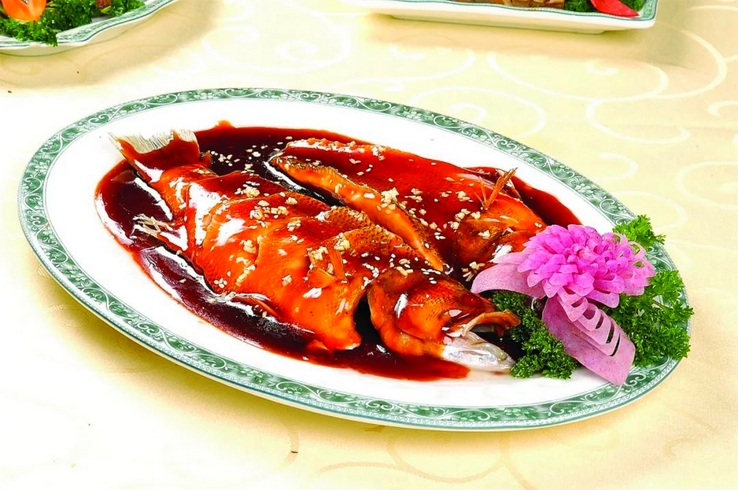
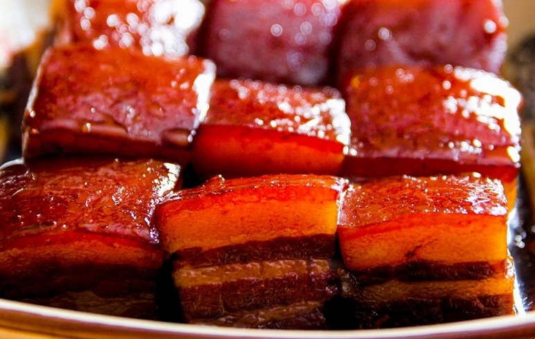
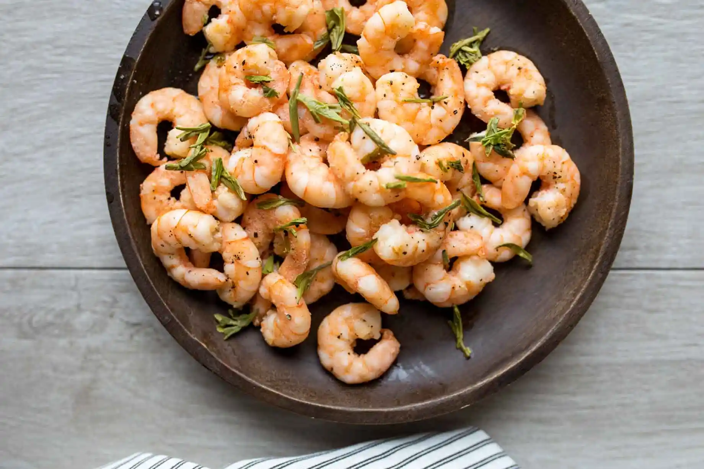

Contexte
Géographie
Le Zhejiang est situé dans l’est de la Chine et possède la plus longue côte de toutes les provinces.
La province est principalement constituée de collines et bénéficie d’un climat subtropical humide, associé à un vaste réseau de rivières qui favorise le développement de la riziculture.
La région est un important centre d’aquaculture en Chine, offrant une grande variété de poissons d’eau douce et de mer. Elle est également renommée pour sa production de thé, en particulier le célèbre thé Longjing, originaire de Hangzhou.
Grâce à ses divers reliefs et à son climat doux, cette région bénéficie d'une grande variété d'ingrédients culinaires. Par exemple, le sud-ouest du Zhejiang est réputé pour ses champignons et notamment ses champignons noirs.
Histoire
Grâce à son climat doux et ses terres fertiles, le Zhejiang a toujours été une région agricole prospère, favorisant la culture du riz, du thé et des légumes. Avec ses nombreuses rivières et son long littoral, la province a développé une tradition culinaire riche en poissons et fruits de mer.
En 605, l'empereur donna pour ordre d'allonger le Grand Canal, reliant ainsi Beijing à Hangzhou. Le Zhejiang est alors relié au reste de la Chine, introduisant de nouvelles influences culinaires.
Pendant la dynastie des Song du Sud (1127-1279), Hangzhou devient la capitale impériale. La présence de la cour, des intellectuels et des marchands a favorisé l'essor d'une cuisine raffinée et sophistiquée. À cette époque, la ville s'impose comme la plus grande du monde. Marco Polo, dans son livre « Il Milione », décrit Hangzhou comme la plus grande, la plus belle et la plus riche ville du monde.
On distingue 4 grands styles de la cuisine du Zhejiang:
- Cuisine de Hangzhou: élégante et raffinée, connue pour son usage de pousses de bambou dans la majorité de ses plats.
- Cuisine de Shaoxing: célèbre pour son vin de riz jaune devenu un ingrédient essentiel de la cuisine chinoise et caractérisée par ses spécialités à base de volailles et ses poissons d'eau douces.
- Cuisine de Ningbo: généralement plus salée, spécialisée dans les fruits de mer.
- Cuisine de Wenzhou: plus douce et légère, également spécialisée dans les fruits de mer.
Caractéristiques
Saveurs
La cuisine du Zhejiang est caractérisée par des saveurs fraîches et légères, mettant en valeur le goût naturel des ingrédients.
Les chefs du Zhejiang utilisent des ingrédients frais et de saison, soigneusement sélectionnés. En effet, seules les meilleures parties des matières premières sont utilisées afin d’obtenir des plats d’exception. Les spécialités locales de saison occupent une place prépondérante et la fraîcheur des ingrédients est primordiale : les fruits de mer et les poissons sont souvent préparés juste après avoir été abattus pour préserver leur goût pur et naturel.
Certains plats utilisent des poissons crus et partagent quelques similitudes avec la cuisine traditionnelle japonaise.
Les saveurs prédominantes dans la cuisine du Zhejiang sont légères, fraîches et douces.
Textures
Dans la cuisine du Zhejiang, la texture des plats joue un rôle aussi crucial que la saveur. Les chefs de cette région recherchent la tendreté de la viande et des poissons et le croquant des légumes frais.
Ainsi, chaque plat est soigneusement préparé pour que l'harmonie et le contraste des textures accompagne et accentue les saveurs, créant une expérience gustative raffinée et bien équilibrée.
Asaisonnements
Pour sublimer les saveurs des plats, la cuisine du Zhejiang utilise divers assaisonnements comme les échalotes, le gingembre, l'ail, le vinaigre et le vin jaune de Shaoxing. Ces ingrédients permettent de neutraliser les odeurs indésirables et d'intensifier les goûts.
En particulier, le vin jaune de Shaoxing, une spécialité de la région, est un condiment incontournable qui donne à la cuisine du Zhejiang une identité unique.
Classiques
Poisson du lac de l'ouest au vinaigre
Ce plat, spécialité de Hangzhou, met en valeur une carpe d'eau douce, plus précisément la carpe de roseau, une espèce qui vit dans les eaux claires du lac de l'Ouest bien qu'elle puisse parfois être remplacée par de la perche.
Le poisson entier est délicatement poché ou cuit à la vapeur, puis recouvert d'une sauce aigre-douce, faite de sucre et de vinaigre noir. Lorsqu'il est préparé à la perfection, le plat évoque le goût de crabe.
Son nom rend hommage au lac de l'Ouest, lieu emblématique de Hangzhou, réputé pour sa beauté pittoresque. Ce lac, qui abrite cette espèce de carpe, est également un symbole vivant des légendes et des poèmes qui ont inspiré de nombreux artistes au fil des siècles.

Porc Dongpo
Le porc Dongpo est un plat emblématique de la cuisine du Zhejiang, en particulier de la ville de Hangzhou.
Le porc Dongpo est préparé avec de la poitrine de porc cuite longuement dans une sauce à base de vin jaune de Shaoxing, de sauce soja, de sucre et d’épices, jusqu’à ce que la viande devienne tendre et caramélisée. Le secret de ce plat réside dans une cuisson lente et minutieuse qui permet au porc d’absorber les arômes et d’obtenir une texture fondante.
Ce délicieux plat tire son nom du célèbre poète et gastronome chinois Su Dongpo, une figure historique de la dynastie Song (960-1279) qui aurait inventé cette recette.

Crevettes sautées au thé Longjing
Les crevettes sautées au thé Longjing sont une spécialité de la ville de Hangzhou.
Ce plat est préparé à partir de crevettes d'eau douce, recouvertes d'un enrobage de blanc d'œuf et d'amidon humidifié. Elles sont ensuite frites dans du saindoux à température moyenne-douce puis rapidement sautées à feu vif avec de l'eau bouillante infusée de thé Longjing, des feuilles de thé et du vin Shaoxing.
Selon la légende, l'empereur Qianlong (1711-1799) de la dynastie Qing, désirant découvrir la vie des citoyens, décida de parcourir le pays déguisé en simple voyageur. Lorsqu'il arriva à Hangzhou, il se rendit dans une auberge et commanda une assiette de crevettes sautées accompagnée d'une tasse de thé. Cependant, le serveur aperçut les vêtements impériaux sous ses habits de simple voyageur et réalisa qu'il avait devant lui l'empereur de Chine. Pris de panique, il confia la situation au chef. Celui-ci, lui aussi stressé, se précipita pour préparer les crevettes sautées. Mais au lieu de saisir des cébettes, il attrapa accidentellement des feuilles de thé. À la surprise générale, l'empereur trouva ce plat délicieux et demanda la recette.
